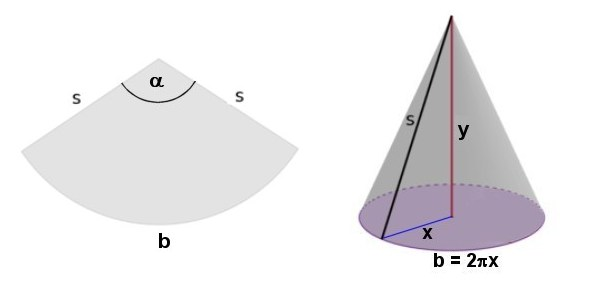

Lösung Puzzle 38: Wundertüte für Ronja

Die Lösung ist α = 120°√6 ≈ 293.94°.
Sei x der Radius des Grundkreises des Kegels und y die Kegelhöhe.
Volumen V(x,y) = 1/3 π x2y. Zielfunktion z(x,y) = x2y soll maximal werden.
Da x2 = s2 - y2, so ist z(y) = s2y - y3.
Erste Ableitung z'(y) = s2 - 3y2 := 0.
Also ist y2 = s2/3 und daher x = s√6 /3.
Da b = 2πx = 2πsα/360°, so ist x = sα/360° und damit α wie oben angegeben.
P.S. Zweite Ableitung z''(y) = -6y < 0 für alle y > 0, also V in der Tat maximal.
©1997 - 2026 www.mathematik.ch |🔍